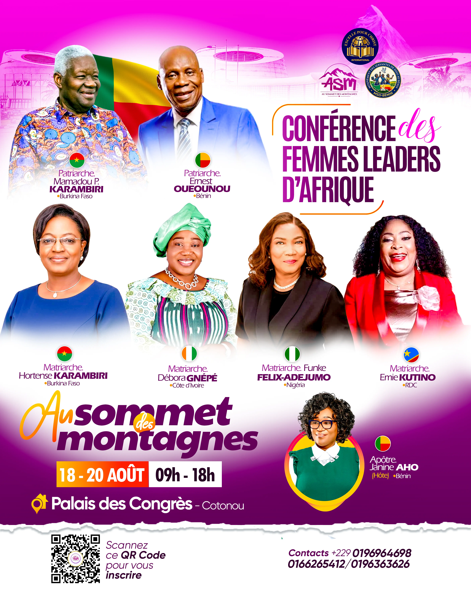

Conférence des Femmes Leaders d'Afrique

Période
Lieu
Statut
À venirRetour aux événements
Sous l'initiative du Saint-Esprit, notre bien-aimée Apôtre Janine Aho a l'honneur de recevoir à Cotonou la Conférence des Femmes Leaders d'Afrique, placée sous le thème « Au sommet des montagnes ».
Cette rencontre exceptionnelle réunira de grandes personnalités venues de plusieurs nations d'Afrique, dont des patriarches et des matriarches, autour d'un même désir : se mettre au service de l'Église et nous aider à grandir dans notre marche avec Christ.
Parmi les invités attendus :
- Patriarche Mamadou P. Karambiri (Burkina Faso)
- Patriarche Ernest Oueounou (Bénin)
- Matriarche Hortense Karambiri (Burkina Faso)
- Matriarche Débora Gnépé (Côte d'Ivoire)
- Matriarche Funke Felix-Adejumo (Nigéria)
- Matriarche Emie Kutino (RDC)
- Apôtre Janine Aho, hôte (Bénin)
Trois jours de conférence chrétienne, de partage et d'enseignement, du 18 au 20 août, de 9h à 18h, au Palais des Congrès de Cotonou. Un rendez-vous à ne pas manquer pour toutes celles et ceux qui désirent être fortifiés et inspirés par ces femmes et hommes de Dieu qui font autorité sur le continent.